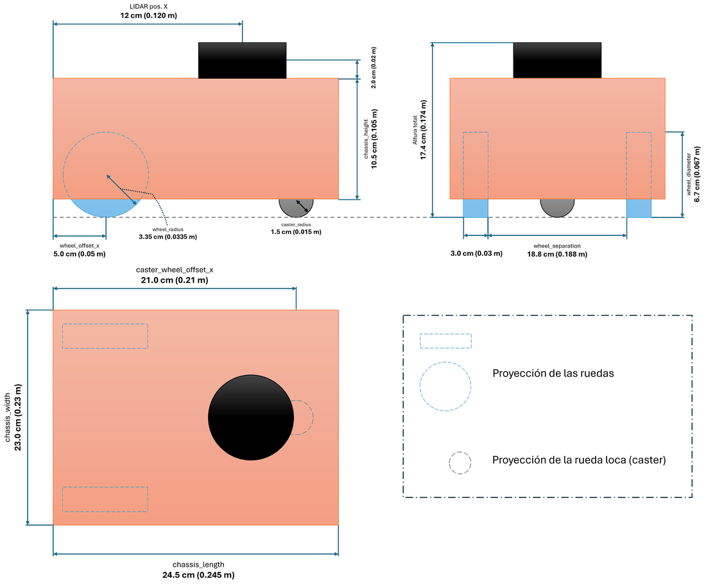
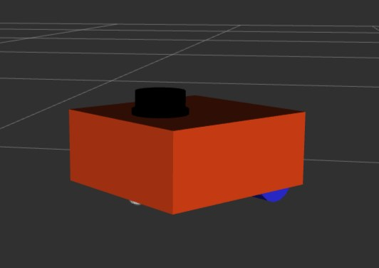
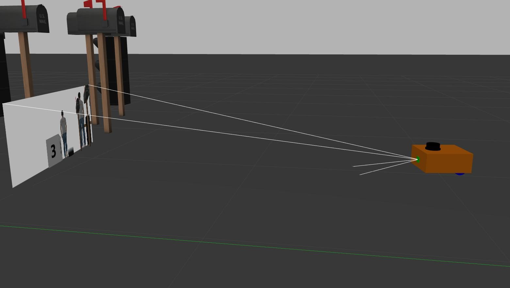

Antes de soldar un cable, el robot ya existía en el computador, con las mismas medidas y los mismos marcos de referencia. Este tema explica qué se puede comprobar en simulación, qué solo en el robot real y por qué dos cifras que parecen gemelas no se comparan.
NivelLectura

Las medidas del gemelo digital, las mismas del robot real. Fig. A2.1 de la tesis.
Probar la geometría antes de arriesgar el hardware
El gemelo digital es el modelo del robot en el simulador Gazebo Classic, descrito una sola vez en un archivo que también usa el robot real. Sirvió para corregir errores de geometría, marcos y configuración antes de arriesgar el hardware. Se aprobó con cuatro criterios de funcionamiento, no con una comparación numérica, y no reproduce la ley del firmware, la zona muerta del driver ni el ruido real. Por eso el mapeo y la exploración se midieron en el robot.
1descripción del robot, compartida por simulación y hardware
4criterios de aceptación antes de usar el gemelo
360 vs 230mediciones por vuelta del láser simulado frente al real
Qué es un gemelo digital
En la industria, un gemelo digital es una réplica virtual de un objeto físico que se usa para probar, anticipar fallas o decidir sin intervenir el objeto real. El término se suele asociar a Michael Grieves, que propuso a inicios de los años 2000 un modelo de espacio espejo para productos, y a una hoja de ruta de la NASA de 2010. Una revisión reciente muestra que la idea tiene raíces aún anteriores, en la manufactura virtual de los años noventa 2.
En este trabajo el término tiene un sentido acotado y práctico. Es el robot descrito una sola vez en un archivo, y cargado tanto en el simulador como en el robot real 1. La ventaja es concreta. Si el radio de rueda está mal escrito, el error aparece igual en los dos mundos, y se corrige en un solo lugar.

El gemelo en Gazebo Classic: un chasis simple, dos ruedas, una rueda loca y el láser. Fig. 4.2 de la tesis.El robot real, con el mismo radio de rueda, separación y posición del láser. Fig. 4.4 de la tesis.
Una sola descripción para los dos robots
El formato URDF describe un robot como un árbol de piezas rígidas unidas por articulaciones. Por cada pieza se declara su forma visible, su forma de colisión y su inercia. Por cada articulación, su tipo, sus límites y qué piezas une 1. La misma descripción alimenta la visualización, la publicación de marcos de referencia y el simulador.
Xacro es un lenguaje de macros que permite definir constantes y dividir la descripción en módulos, de modo que medidas como el radio de rueda se escriben una sola vez. En este robot, un archivo raíz arma el modelo con el núcleo mecánico y elige el resto según dónde se ejecute.
Estructura del modelo
Datos de la tesis
robot.urdf.xacroarchivo raíz
robot_core.xacrobase_link, chasis, dos ruedas, rueda loca y laser_frame
Si es simulaciónlidar_sim.xacro y el plugin GazeboSystem. Los estados de las ruedas los entrega Gazebo directamente.
Si es el robot reallidar.xacro y el plugin DiffDriveArduino. Los estados salen de los encoders, vía el Arduino.
En ambos casos se usa ros2_control con las mismas interfaces, una orden de velocidad por rueda y su posición y velocidad como estado. Tabla 4.2 de la tesis.
Esto tiene una consecuencia que conviene tener presente. En simulación, las ruedas no pasan por la conversión a pulsos ni por el controlador del firmware. El gemelo sirve para probar la geometría, los marcos y la navegación, pero no el control de bajo nivel.
Los marcos del modelo en RViz. Verificar que no haya marcos sueltos fue el primer criterio de aceptación. Captura del autor.El láser simulado en el mundo de prueba, con sombras detrás de cada obstáculo. Fig. 4.3 de la tesis.
El láser simulado es equivalente, pero ideal
Característica
Simulado
Real
Mediciones por vuelta
360 muestras
230 sectores
Distancia mínima
0,08 m
0,15 m
Distancia máxima
12 m
12 m
Ruido
no se declara
el propio del sensor
Anexos 2 y 3.4 de la tesis.
Un modelo puede crecer sin tocar el robot real. La captura siguiente muestra el mismo gemelo con una cámara simulada frente a un mundo de prueba. La cámara no forma parte del sistema que evalué, pero ilustra cómo se probaría un sensor nuevo antes de comprarlo.

Una cámara simulada en el gemelo. Las líneas blancas marcan su campo de visión. Captura del autor. Extensión posible, no evaluada en este trabajo.
Cómo se aprobó el gemelo
Antes de usar el gemelo para probar SLAM y navegación, se aplicaron cuatro criterios mínimos 1. La cadena de marcos debía estar completa, sin marcos sueltos. El láser y la odometría debían publicarse con frecuencia estable. El robot debía avanzar y girar como dice el modelo diferencial. Y el radio y la separación de las ruedas debían ser iguales a los del prototipo.
Los criterios de aprobación y lo que no reproduce
Datos de la tesis
Cadena de marcos completa, sensores estables, movimiento coherente y paridad geométrica.
Los criterios se confirmaron durante la puesta en marcha del modelo. No incluí, por ejemplo, los valores medidos de frecuencia de los tópicos ni la imagen del árbol de marcos. Es una debilidad del registro y deja una lección práctica. Lo que no se registra, después no se puede mostrar.
Con el vocabulario de la ingeniería de sistemas, el gemelo quedó verificado, porque cumple los cuatro criterios. No quedó validado como representación cuantitativa del robot real, porque nunca se comparó una misma variable medida en ambos 3. La diferencia entre esas dos palabras se desarrolla en La evidencia.
La brecha entre simulación y realidad
Ningún simulador es la realidad. Gazebo Classic no reproduce del todo el roce, la zona muerta del driver, el ruido de los sensores ni las latencias reales 1. A esa diferencia se le llama brecha entre simulación y realidad, y es un tema de investigación en sí mismo. Una de las técnicas conocidas es variar al azar los parámetros de la simulación, como texturas, colores o iluminación, para que lo aprendido en ella resista mejor el paso al mundo real 4.
Por qué las cifras de simulación y del robot no se comparan
En la recta de 2 m, la desviación en simulación fue de 3,39 % y en el robot real de 7,18 %. Parecen la misma medida en dos entornos, pero miden cosas distintas. En simulación la pose verdadera de Gazebo no quedó registrada, así que la distancia salió de la propia odometría. En el robot real se midió con cinta. Una cifra se mide consigo misma y la otra contra una referencia física 1.
En simulación, 3,39 %
Odometría simulada frente a los 2 m ordenados. No hay referencia externa.
En el robot, 7,18 %
Cinta métrica frente a los 2 m ordenados. Es el error de seguimiento real.
La cifra que sí se parece
En el robot, los encoders marcaron 3,8 % menos que lo ordenado, del mismo orden que la simulación. Pero eso tampoco es una validación del gemelo.
Por eso el mapeo, la navegación y la exploración se midieron con indicadores solo en el robot real. En simulación se construyeron mapas en sesiones previas, pero sin calcular indicadores, y la comparación entre ambos es cualitativa. Los mapas simulados tienen paredes más nítidas y nada de ruido en el espacio libre, y los reales detectan solo en parte los obstáculos pequeños.
Por qué Gazebo Classic
Elegí Gazebo Classic y no el Gazebo actual porque es el que usan los complementos de simulación y de ros2_control del paquete base adaptado, disponibles para ROS 2 Foxy sobre Ubuntu 20.04 1. Gazebo Classic llegó al fin de su soporte en enero de 2025 5, así que propongo dos mejoras. Migrar el gemelo a una versión vigente de Gazebo junto con ROS 2, y registrar la pose verdadera del simulador en los ensayos para separar el error odométrico del de seguimiento también en simulación.
En el mundo real
Probar en una copia antes que en el original es una práctica de toda la ingeniería, desde la exploración espacial hasta las competencias de robótica.
NASA JPL · Estados Unidos
OPTIMISM, el gemelo terrestre de Perseverance
El laboratorio mantiene en la Tierra una copia de tamaño real del rover para ensayar maniobras y comandos antes de enviarlos a Marte. Es un gemelo físico, no digital, pero cumple el mismo papel.
Permite equivocarse primero en la copia, que es para lo que usé el gemelo de este robot.
Una competencia que también se corrió en simulación
El desafío subterráneo de DARPA tuvo, además de las pruebas con robots reales, una competencia virtual en la que los equipos exploraban túneles y cuevas simuladas, con un simulador de Open Robotics, la organización detrás de Gazebo.
Usó la simulación como banco de pruebas para algoritmos de exploración, el mismo uso que le di aquí.
El tutorial base para armar un gemelo como el de esta tesis, del autor del paquete adaptado. Fuente 8
Fuentes de este tema
TesisValderas Neculqueo, S. (2026). Navegación y exploración autónoma de interiores utilizando un robot móvil de tracción diferencial. UTEM. Secciones 1.5, 2.1, 3.1, 4.2, 5.1 y 5.5, Tablas 4.2, 5.1, A2.2 y A8.1, y Anexo 2.
PreprintZhou, J., Zhang, S. y Gu, M. (2022). Revisiting Digital Twins: Origins, Fundamentals and Practices. arxiv.org/abs/2203.12867
NASANASA (2016). NASA Systems Engineering Handbook, Sec. 2.4, Distinctions between Product Verification and Product Validation. nasa.gov
ArtículoTobin, J. y otros (2017). Domain randomization for transferring deep neural networks from simulation to the real world. IEEE/RSJ IROS. arxiv.org/abs/1703.06907
DocumentaciónOpen Source Robotics Foundation (2025). Gazebo Classic. classic.gazebosim.org
NASANASA JPL. NASA Readies Perseverance Mars Rover's Earthly Twin. jpl.nasa.gov
InstitucionalOpen Robotics (2021). DARPA SubT Final Competition. openrobotics.org. Y Universidad Técnica Checa, Second place in the virtual competition of DARPA SubT Challenge. cs.fel.cvut.cz